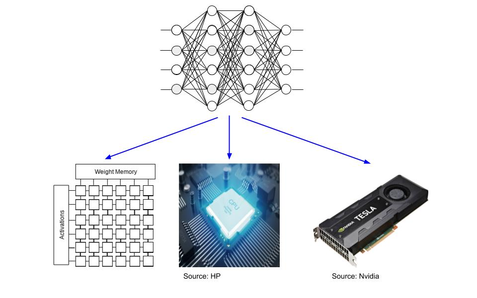

|
Krishna Teja Chitty-Venkata
About Me
-
I am a passionate and enthusiastic researcher, working primarily at the intersection of Systems and Deep Learning.
I am currently working as a Postdoctoral Researcher at Argonne National Laboratory.
I finished my PhD from Iowa State University in Computer Engineering, under the guidance of Prof. Arun Somani.
My research interests span across Machine Learning (ML), Computer Architecture, High Performance Computing (HPC), Computer Vision, AI Accelerators and Large Language Models (LLMs).
Education
PhD Research
-
I worked as a Research Assistant under the supervision of Dr. Arun Somani in the Dependable Computing and Networking Laboratory.
My research interests are Machine Learning, Computer Architecture and Parallel Computing
-
I primarily work at the intersection of Systems (Hardware Acceleration) and Deep Learning (Computer Vision) which include designing efficient Neural Network algorithms
(Pruning, Quantization and Neural Architecture Search) for processing on Special Purpose Accelerators (TPU-like) and General Purpose devices (CPU, GPGPU)
-
I'm also working on different problems (fault tolerance, memory accesses) with respect to special purpose DNN hardware
| Algorithmic Aspect: |
Pruning, Quantization, Neural Architecture Search |
| Architecture: |
Accelerator Design, Fault Tolerance |
| Parallel Processing: |
Efficient DNN execution on CPUs (Single-core and Multi-core) and GPUs |

|